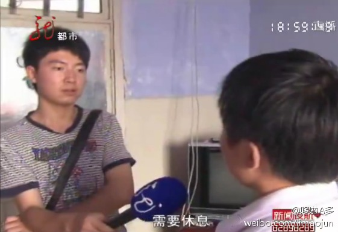

[哈尔滨夫妻旅店恩爱遭偷拍 买碟发现自己成主角]哈尔滨的小李有一天逛夜市，想买两本光盘，和妻子一起解解闷，可没想到这光盘内容，让他吓了一跳！光盘里面不仅充斥着色情内容。而且其中一段的男主角就是他自己。网页链接 
昨天从家回哈尔滨，在先锋路看到了“楼盘网”的广告，哈尔滨楼盘网啊亲。。难不成是看头两年给现有的网站吃肥了来抢食儿的。。哈哈哈 怎么越来越多的房产网站，真是让人应不暇接啊~同质化严重~ @黑淇豆豆 @raiclebaby @乐居赵悦 @方小太爷要做项老师脑残粉 @早行远客-刘艳娇 @不丢了 @_毛线球
 网页链接
网页链接